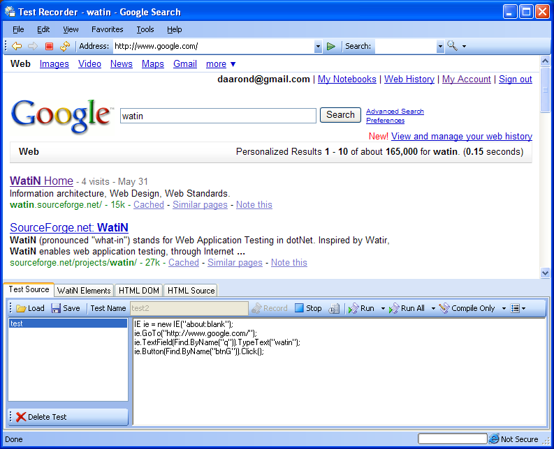

Overview
The purpose of the application is to generate code compatible with the WatiN
(Web Application Testing In .NET) project.
Version 2.0 is now in BETA:
Huge interface improvements, including running in the recorder window, breakpoints, and more
| Edit scripting elements and their functions with an easy-to-use interface

|
Run the same tests with different data using the dataset feature

| Mouseover elements on the page and show actions available

|
An exciting addition to the WatiN library is FireFox and Chrome support.
| Code is not recorded in a specific language, but as objects formatted into a model
|
Get the 1.0 version
Version 2 is in beta, but you can download it.
Major Features of Version 2:
- Generates source code in:
- C#
- VB.NET
- PHP, Perl, Python, and Ruby support to come later
- User-definable code format templates
- Embedded Internet Explorer browser, but code can be generated for Firefox (Chrome is coming!)
- Monitors clicks and keystrokes automatically
- Record multiple tests
- Record time between clicks or typing
- Full Frames/IFrames support
- Supports a majority of methods implemented in WatiN
- Test framework support for:
- NUnit
- MbUnit
- PHPUnit
- Python UnitTest
- VS2005 Test
- ZaneBug
- Code formatted as a model for ease of maintenance
- Recording can in the same window
- Breakpoint, step, and continue support
- Script element editing interface
- Run the same script with different data with the dataset feature
- Compile into executable or class library
- Run console (C#, VB.NET) or generated scripts (PHP, Perl, Python)
- View HTML DOM tree structure, highlighting selected elements
- View WatiN Elements, highlighting selected elements
- Open-source freeware under GPL2, written in C#.NET 2.0
>See the list of available templates

Want to see the latest in test case development? Here's the sweet and lowdown on what
the WatiN Test Recorder 2.0 has to offer. This short animation shows a basic overview of
features without taxing your brain.
Animations (Flash Required)
Basic Animation (Version 2.0)